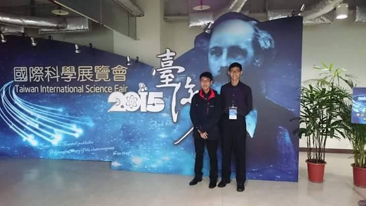
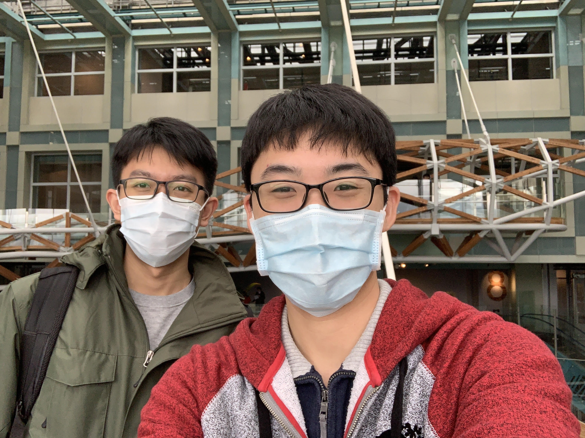
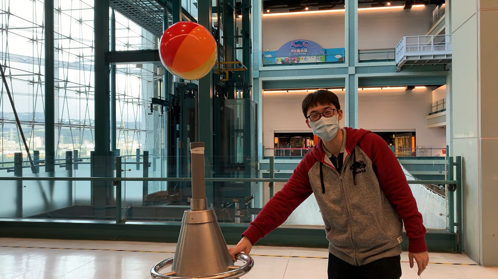
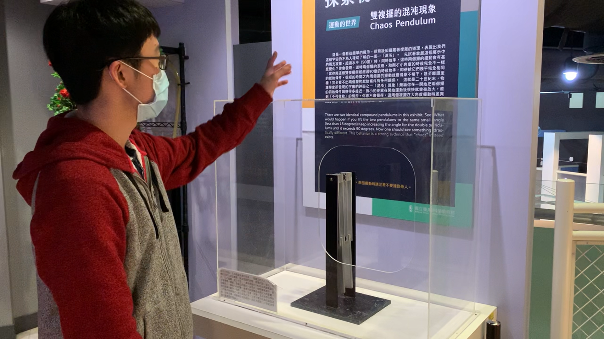

科教館是個我從小到大就很喜歡的地方，也算是啟發我對科學興趣的場所。能看看這些平常只能在書上看到的展品是十分有趣的，有一種 哇！ 我之前看到的東西竟然在這裡欸！的那種感覺。 尤其是那種可以互動和實驗的展覽品，更是吸引人！

不過，上次真的踏進科教館沒想到已經是7年前了！是我高二參加國際科展的時候，那時候我參展的物理作品鎩羽而歸，不受評審青睞，我還記得那時候我跟我的組員很失望的坐在二樓角落，然後還偷偷跑到廁所滴了幾滴眼淚。沒想到都已經是那麼久以前的事了！ 
今天很開心又能回到科教館參觀，一個有開心、好奇、興奮、難過、失望各種情緒揉合交織的地方，在懷念過去的回憶之際順便參觀這幾年科教館更新的展覽品。裡面的展覽主要就是有常態館，以及各種不同的特展（給小朋友或是網美打卡用der），不過比起那些美美的卡通展覽和打卡聖地，還是pure science點的展區更吸引我，所以今天就花整天仔細的研究常態展的每個玩意！ 
這次參觀的地方相較於我七八年前的印象，更新了滿多新的展區、天橋，我覺得超精彩！（相較於台中的科博館，幾乎十年沒變了，真的要加油啊！）這次新增了半導體展，裡面陳列了一些半導體發展歷史和原理解說，對於我這個算材料物理電子背景的滿有感覺的～ 覺得課本裡的東東和知識都在上面出現，真的很酷！ 
後來也參觀了物理區，裡面更新了不錯的互動實驗，例如耦合擺、共振擺、圓形駐波模式、雙擺、碰撞中心擺、空氣透鏡…（時間有限還有好多區沒看完！）這些展品的背後原理說簡單可以簡單，但真的要透徹了解可能需要大二大三以上物理系才能理解的原理，還好現在我都算懂了哈哈（不然書真的白唸了）。當然也很感謝陳睿賢一起陪我參觀科教館，有個志同道合的朋友邊參觀邊討論，真的很過癮啊！ 
有趣的是，剛好我在展區的時候順便拍攝了幾段要放在YT的介紹影片，遇到路過好奇的民眾。我也儘量以不失專業科學知識的方法搭配簡單的文字和生活的舉例來講解，盡可能把展品的科學概念分享給民眾聽，也是個十分有趣好玩的經驗！（第一次講解科學給陌生人民眾聽，有點緊張還會顫抖XD）（我就常在想我以後退休可能就會去那邊當老杯杯導覽員了XD）
看完這些展品稍稍找回點科學的感動，或許有時候我在科研上感到挫折迷茫，但別忘了科學帶給自己的那份喜悅和感動！感謝這週末的朵雲和科教館帶給我的滿滿感動，讓補血過後的我能繼續和實驗論文奮鬥☺️